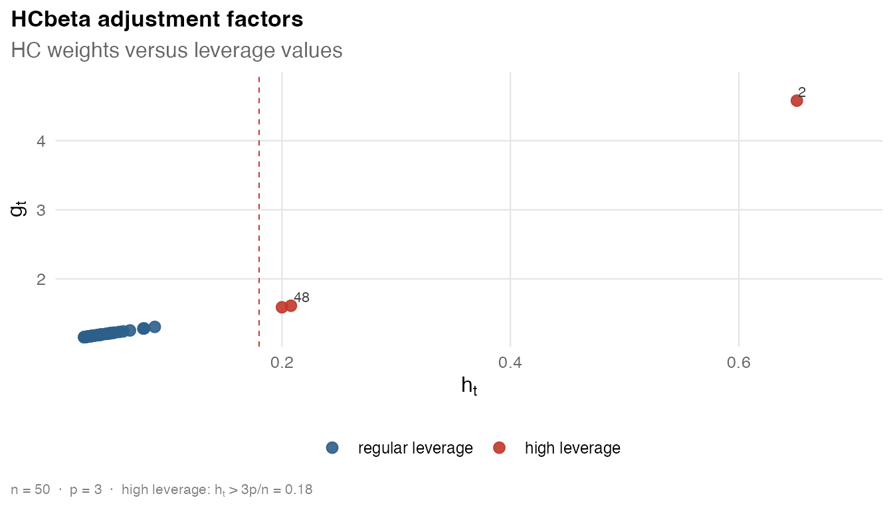

HCbeta is the default estimator in hcinfer(). This
vignette shows how to use it, inspect the stored quantities, and run
small sensitivity checks with its method-specific arguments.
Run HCbeta
Fit an OLS model and request HCbeta explicitly. This is equivalent to
the default hcinfer(fit) call.
library(hcinfer)
schools <- PublicSchools |>
dplyr::mutate(
income_scaled = income / 10000,
income_scaled_sq = income_scaled^2
)
fit <- lm(expenditure ~ income_scaled + income_scaled_sq, data = schools)
result <- hcinfer(fit, type = "hcbeta")
summary(result)
#>
#> ── 🔎 HCbeta robust inference summary ──────────────────────────────────────────
#>
#> ── 📐 Model ──
#>
#> Formula: `expenditure ~ income_scaled + income_scaled_sq`
#> Observations: 50 | Parameters: 3 | Residual df: 47
#>
#> ── 🥪 Robust covariance ──
#>
#> Estimator: HCbeta
#> Confidence level: 95.0% | Normal critical value: 1.9600
#> Tests are two-sided normal Wald tests, one coefficient at a time.
#> Test results use alpha = 0.050.
#>
#> ── 🎯 Leverage diagnostics ──
#>
#> # A tibble: 6 × 2
#> statistic value
#> <chr> <chr>
#> 1 minimum 0.02669
#> 2 q1 0.03106
#> 3 median 0.03912
#> 4 mean 0.06
#> 5 q3 0.04962
#> 6 maximum 0.6508
#> Maximum leverage: observation 2 (index 2), value 0.6508
#> Average leverage: 0.0600
#> Concentration: 10.85 x average leverage
#>
#> ── ⚖️ Robust weights ──
#>
#> # A tibble: 6 × 2
#> statistic value
#> <chr> <chr>
#> 1 minimum 1.156
#> 2 q1 1.167
#> 3 median 1.187
#> 4 mean 1.276
#> 5 q3 1.212
#> 6 maximum 4.581
#> Maximum weight: observation 2 (index 2), value 4.5807
#> Median weight: 1.1869
#> Concentration: 3.86 x median weight
#>
#> ── ⚙️ Method parameters ──
#>
#> # A tibble: 12 × 3
#> parameter value role
#> <chr> <chr> <chr>
#> 1 c1 7 method constant
#> 2 c2 0.75 method constant
#> 3 lower 0.01 method constant
#> 4 upper 0.99 method constant
#> 5 mu_hat 0.94 estimated quantity
#> 6 s2_w 0.008504 estimated quantity
#> 7 phi_hat 5.632 estimated quantity
#> 8 a_hat 5.294 estimated quantity
#> 9 b_hat 0.3379 estimated quantity
#> 10 zeta 0.5 estimated quantity
#> 11 a_tilde 3.147 estimated quantity
#> 12 b_tilde 0.669 estimated quantity
#>
#> ── 🔎 Coefficient tests ──
#>
#> # A tibble: 3 × 9
#> term estimate robust_se z p_value alpha test_result
#> <chr> <chr> <chr> <chr> <chr> <chr> <chr>
#> 1 (Intercept) 832.9 850.7 0.9791 0.328 0.050 ✅ do not reject H0
#> 2 income_scaled -1834 2309 -0.7945 0.427 0.050 ✅ do not reject H0
#> 3 income_scaled_sq 1587 1547 1.026 0.305 0.050 ✅ do not reject H0
#> ci ci_relation
#> <chr> <chr>
#> 1 [-834.3, 2500] includes null
#> 2 [-6359, 2691] includes null
#> 3 [-1446, 4620] includes null
#>
#> ── 📏 Confidence intervals ──
#>
#> # A tibble: 3 × 4
#> term null_value interval interpretation
#> <chr> <chr> <chr> <chr>
#> 1 (Intercept) 0 [-834.3, 2500] includes null
#> 2 income_scaled 0 [-6359, 2691] includes null
#> 3 income_scaled_sq 0 [-1446, 4620] includes null
#> 💡 test_result is based on p_value < alpha. Do not reject H0 does not mean that
#> H0 is true.Extract coefficient test results
Use tests() to extract the coefficient-level Wald
results as a tibble.
tests(result)
#> # A tibble: 3 × 8
#> term estimate null_value std_error z_value p_value alpha reject
#> <chr> <dbl> <dbl> <dbl> <dbl> <dbl> <dbl> <lgl>
#> 1 (Intercept) 833. 0 851. 0.979 0.328 0.05 FALSE
#> 2 income_scaled -1834. 0 2309. -0.794 0.427 0.05 FALSE
#> 3 income_scaled_sq 1587. 0 1547. 1.03 0.305 0.05 FALSEFor example, extract the robust standard error and p-value for the quadratic income term.
Inspect HCbeta parameters
HCbeta stores both user-facing constants and estimated quantities in
method_params.
result$method_params
#> $c1
#> [1] 7
#>
#> $c2
#> [1] 0.75
#>
#> $lower
#> [1] 0.01
#>
#> $upper
#> [1] 0.99
#>
#> $mu_hat
#> [1] 0.94
#>
#> $s2_w
#> [1] 0.008503804
#>
#> $phi_hat
#> [1] 5.632326
#>
#> $a_hat
#> [1] 5.294386
#>
#> $b_hat
#> [1] 0.3379395
#>
#> $zeta
#> [1] 0.5
#>
#> $a_tilde
#> [1] 3.147193
#>
#> $b_tilde
#> [1] 0.6689698The most useful entries for routine inspection are:
| Entry | Meaning |
|---|---|
c1, c2
|
Constants controlling the HCbeta exponent. |
lower, upper
|
Truncation limits for leverage complements. |
a_tilde, b_tilde
|
Adjusted Beta shape parameters. |
zeta |
Shrinkage weight used in the Beta parameter adjustment. |
These values are diagnostics. In routine use, the defaults should usually be left unchanged.
Inspect leverage and weights
HCbeta, like the other estimators, stores leverage values and robust weights. This table shows the observations with the largest leverages.
diagnostics <- tibble::tibble(
observation = result$observation,
leverage = result$leverage,
weight = result$weights,
residual = result$residuals
) |>
dplyr::mutate(
state = schools$state[as.integer(observation)],
.before = leverage
)
diagnostics |>
dplyr::arrange(dplyr::desc(leverage)) |>
dplyr::slice_head(n = 5)
#> # A tibble: 5 × 5
#> observation state leverage weight residual
#> <chr> <chr> <dbl> <dbl> <dbl>
#> 1 2 Alaska 0.651 4.58 110.
#> 2 48 Washington DC 0.208 1.61 -161.
#> 3 24 Mississippi 0.200 1.59 -44.0
#> 4 4 Arkansas 0.0887 1.30 -30.5
#> 5 40 South Carolina 0.0794 1.28 8.64You can also sort by robust weight.
diagnostics |>
dplyr::arrange(dplyr::desc(weight)) |>
dplyr::slice_head(n = 5)
#> # A tibble: 5 × 5
#> observation state leverage weight residual
#> <chr> <chr> <dbl> <dbl> <dbl>
#> 1 2 Alaska 0.651 4.58 110.
#> 2 48 Washington DC 0.208 1.61 -161.
#> 3 24 Mississippi 0.200 1.59 -44.0
#> 4 4 Arkansas 0.0887 1.30 -30.5
#> 5 40 South Carolina 0.0794 1.28 8.64The covariance object can be plotted directly to display adjustment factors against leverages.

Use the covariance-only interface
Use vcov_hc() when you only need the HCbeta covariance
matrix and diagnostics.
hcbeta_cov <- vcov_hc(fit, type = "hcbeta")
hcbeta_cov
#>
#> ── 🥪 HCbeta robust covariance ─────────────────────────────────────────────────
#> 📐 Model: `expenditure ~ income_scaled + income_scaled_sq`
#> Dimension: 3 x 3
#> Observations: 50
#> Parameters: 3
#> 🎯 Maximum leverage: 0.6508
#> ⚖️ Maximum robust weight: 4.5807
#> Use `vcov()` to extract the stored covariance matrix.
vcov(hcbeta_cov)
#> (Intercept) income_scaled income_scaled_sq
#> (Intercept) 723617.6 -1962262 1312195
#> income_scaled -1962262.2 5329884 -3569755
#> income_scaled_sq 1312195.3 -3569755 2394627The covariance object stores the same method parameters and diagnostics.
hcbeta_cov$method_params
#> $c1
#> [1] 7
#>
#> $c2
#> [1] 0.75
#>
#> $lower
#> [1] 0.01
#>
#> $upper
#> [1] 0.99
#>
#> $mu_hat
#> [1] 0.94
#>
#> $s2_w
#> [1] 0.008503804
#>
#> $phi_hat
#> [1] 5.632326
#>
#> $a_hat
#> [1] 5.294386
#>
#> $b_hat
#> [1] 0.3379395
#>
#> $zeta
#> [1] 0.5
#>
#> $a_tilde
#> [1] 3.147193
#>
#> $b_tilde
#> [1] 0.6689698
summary(hcbeta_cov)
#>
#> ── 🥪 HCbeta robust covariance summary ─────────────────────────────────────────
#>
#> ── 📐 Model ──
#>
#> Formula: `expenditure ~ income_scaled + income_scaled_sq`
#> Observations: 50 | Parameters: 3 | Residual df: 47
#>
#> ── 🎯 Leverage diagnostics ──
#>
#> # A tibble: 6 × 2
#> statistic value
#> <chr> <chr>
#> 1 minimum 0.02669
#> 2 q1 0.03106
#> 3 median 0.03912
#> 4 mean 0.06
#> 5 q3 0.04962
#> 6 maximum 0.6508
#> Maximum leverage: observation 2 (index 2), value 0.6508
#> Average leverage: 0.0600
#> Concentration: 10.85 x average leverage
#>
#> ── ⚖️ Robust weights ──
#>
#> # A tibble: 6 × 2
#> statistic value
#> <chr> <chr>
#> 1 minimum 1.156
#> 2 q1 1.167
#> 3 median 1.187
#> 4 mean 1.276
#> 5 q3 1.212
#> 6 maximum 4.581
#> Maximum weight: observation 2 (index 2), value 4.5807
#> Median weight: 1.1869
#> Concentration: 3.86 x median weight
#>
#> ── ⚙️ Method parameters ──
#>
#> # A tibble: 12 × 3
#> parameter value role
#> <chr> <chr> <chr>
#> 1 c1 7 method constant
#> 2 c2 0.75 method constant
#> 3 lower 0.01 method constant
#> 4 upper 0.99 method constant
#> 5 mu_hat 0.94 estimated quantity
#> 6 s2_w 0.008504 estimated quantity
#> 7 phi_hat 5.632 estimated quantity
#> 8 a_hat 5.294 estimated quantity
#> 9 b_hat 0.3379 estimated quantity
#> 10 zeta 0.5 estimated quantity
#> 11 a_tilde 3.147 estimated quantity
#> 12 b_tilde 0.669 estimated quantityRun a sensitivity check
The HCbeta constants can be passed through .... A
sensitivity check compares the default result with a small set of
alternative settings.
sensitivity_results <- list(
default = hcinfer(fit, type = "hcbeta"),
c1_5 = hcinfer(fit, type = "hcbeta", c1 = 5),
tighter_truncation = hcinfer(fit, type = "hcbeta", lower = 0.02, upper = 0.98)
)
sensitivity <- purrr::imap(sensitivity_results, \(res, setting) {
row <- tests(res, parm = "income_scaled_sq")
ci <- confint(res, parm = "income_scaled_sq")
tibble::tibble(
setting = setting,
std_error = row$std_error,
p_value = row$p_value,
conf_low = ci$conf_low,
conf_high = ci$conf_high,
max_weight = max(res$weights)
)
})
sensitivity <- dplyr::bind_rows(sensitivity)
sensitivity
#> # A tibble: 3 × 6
#> setting std_error p_value conf_low conf_high max_weight
#> <chr> <dbl> <dbl> <dbl> <dbl> <dbl>
#> 1 default 1547. 0.305 -1446. 4620. 4.58
#> 2 c1_5 1292. 0.219 -945. 4119. 3.02
#> 3 tighter_truncation 1547. 0.305 -1446. 4620. 4.58This table helps identify whether the reported inference is sensitive to small changes in HCbeta tuning constants. The defaults remain the recommended starting point.
Compare HCbeta with one classical estimator
For a quick comparison, put HCbeta next to a classical estimator such as HC3.
hc3 <- hcinfer(fit, type = "hc3")
extract_income <- function(res, method) {
row <- tests(res, parm = "income_scaled_sq")
ci <- confint(res, parm = "income_scaled_sq")
tibble::tibble(
method = method,
estimate = row$estimate,
std_error = row$std_error,
p_value = row$p_value,
conf_low = ci$conf_low,
conf_high = ci$conf_high
)
}
compare_hc3 <- dplyr::bind_rows(
extract_income(result, "hcbeta"),
extract_income(hc3, "hc3")
)
compare_hc3
#> # A tibble: 2 × 6
#> method estimate std_error p_value conf_low conf_high
#> <chr> <dbl> <dbl> <dbl> <dbl> <dbl>
#> 1 hcbeta 1587. 1547. 0.305 -1446. 4620.
#> 2 hc3 1587. 1995. 0.426 -2324. 5498.Practical workflow
For routine analyses:
- Fit an OLS model with
lm(). - Run
hcinfer(fit)orhcinfer(fit, type = "hcbeta"). - Use
summary(result)for readable output. - Use
tests(result),confint(result),coef(result), andvcov(result)for extracted values. - Inspect
result$weights,result$leverage, andresult$method_paramswhen diagnostics are needed.
Use vignette("hcinfer-comparison") when you want to
compare HCbeta with other estimators implemented in the package.